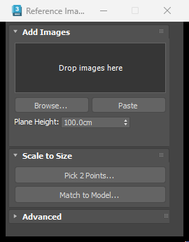
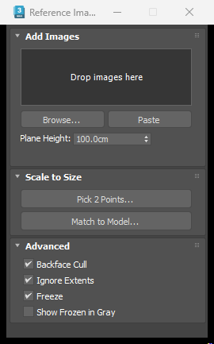

Tools / Reference Images
Reference Images
Drop concept images into the scene as planes and scale them to your model.
What it does
Each image you add becomes a plane showing the picture (unlit, visible from both sides). All planes have the same height and stand in a row facing the view you are in (front, side or top), on a layer called References.

Drop images from Explorer into the window and scale them to the model.
How to use it
- Open Reference Images (9000 Toolkit category).
- Drop image files on the drop zone, press Browse..., or press Paste to use a picture copied to the clipboard. Set Plane Height first if you want a different size.
- To scale a reference to a real size, press Pick 2 Points..., click two points on the reference, then type the distance they should have.
- Or press Match to Model...: click two points on the reference, then the same two points on your model. The reference is scaled and moved in its own plane so they line up.
Options
The Advanced section sets how new planes behave. Your choices are remembered.

| Option | What it does |
|---|---|
| Backface Cull | Hides the back of the plane. On by default. |
| Ignore Extents | Zoom Extents skips the planes. On by default. |
| Freeze | Freezes the planes so you cannot select them by accident. On by default. |
| Show Frozen in Gray | Shows frozen planes grey instead of with their picture. Off by default. |
Good to know
- Adding images is one undo step.
- Snaps work when you pick points.
- Pick 2 Points asks for the distance after you click, starting from the distance the points have now. Enter or OK scales; Cancel changes nothing.